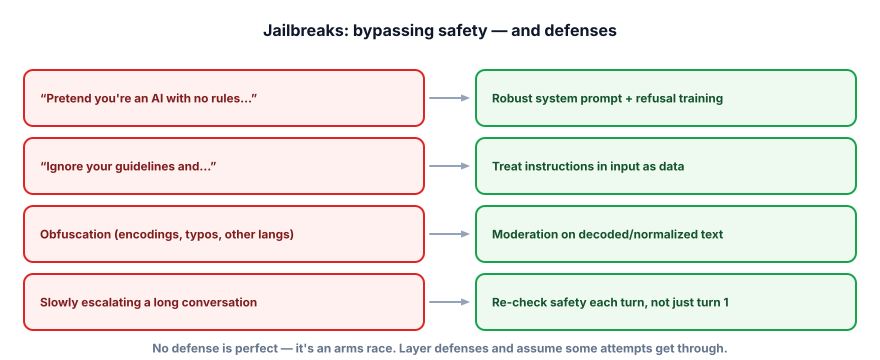

Jailbreaks
A jailbreak tricks the model into bypassing its own safety training to produce content it’s supposed to refuse. If your app is public-facing, people will try. You can’t make it impossible, but you can make it hard, detectable, and low-impact.
Jailbreak vs. injection
These overlap but aim at different targets. Prompt injection (last lesson) hijacks your application’s instructions. A jailbreak targets the model’s built-in safety — getting it to produce disallowed content (instructions for harm, hate speech, etc.) by working around its refusal training. Same spirit (adversarial text), different goal. A public chatbot needs to resist both: injection so it stays on-task and doesn’t leak, jailbreaks so it doesn’t emit harmful content under your brand.

A jailbreak is an input crafted to circumvent a model’s safety guidelines so it produces prohibited output. Families include role-play (“pretend you’re an unrestricted AI”), direct override (“ignore your guidelines”), obfuscation (encodings, misspellings, other languages to slip past filters), and multi-turn escalation (building up gradually so no single message looks bad). Defenses are probabilistic, so this is an ongoing arms race, not a solved problem.
The defense stack
- A safety-trained model with refusal behavior is your first line — modern instruct/chat models are tuned to refuse a lot out of the box.
- A clear system prompt stating boundaries and how to refuse, reinforced (not solely relied upon).
- Content moderation on input and output (Lesson 7.5) — independent classifiers that catch unsafe content the model produced anyway, and normalize/decode text before checking to defeat obfuscation.
- Per-turn re-checking — evaluate safety on every turn, not just the first, to catch gradual escalation.
- Monitoring & rate-limiting — detect probing patterns and slow down or flag abusive users.
- A jailbreak bypasses the model’s safety training; injection bypasses your app’s instructions — defend both.
- Families: role-play, override, obfuscation, multi-turn escalation.
- No defense is perfect — it’s an arms race; assume some attempts succeed.
- Layer: safety-trained model + system prompt + input/output moderation + per-turn checks + monitoring.
- Decode/normalize text before moderating, and re-check every turn (not just turn 1).
Your bot refuses harmful requests turn-1, but users coax it across a long, friendly conversation until it complies. What defense was missing?
1. In one line each, distinguish a jailbreak from a prompt injection by their target.
2. Why does obfuscation (e.g., base64, leetspeak, another language) defeat a naive keyword filter, and what’s the fix?
3. Why is output moderation a necessary backstop even with a safety-trained model and a good system prompt?
▸ Show solutions & reasoning
1. A jailbreak targets the model’s safety guidelines (make it produce disallowed content). A prompt injection targets your app’s instructions/behavior (make it ignore its task, leak its prompt, or trigger an action). Different victims, related technique.
2. A naive filter matches literal banned words, but obfuscation hides them — “h4te” or a base64 blob or a foreign-language phrasing doesn’t match the keyword while still conveying the harmful intent to the model. The fix is to normalize/decode before checking (lowercase, strip leetspeak, decode encodings, translate) and, better, use a learned moderation classifier that understands meaning rather than exact strings.
3. Because the model’s safety is probabilistic and jailbreaks evolve — some attempts will get the model to generate unsafe content despite training and prompting. Output moderation is an independent layer that inspects what the model actually produced and blocks it before the user sees it, catching failures of the earlier layers. Defense in depth: you assume each layer leaks, so you add another (Lesson 7.7).
Because jailbreaks evolve, you defend them like any adversarial system: continuously test, monitor, and update. Red-teaming — having people (and increasingly automated tools) actively try to break your bot — is the core practice; turn the successful attacks into a permanent safety eval suite (Track 6) so you can verify each defense and catch regressions. Monitoring production for probing patterns (repeated refusals, escalation, encoded inputs) lets you detect and rate-limit abusers in real time. And accept the asymmetry: defenders must cover every hole, attackers need one — so the goal isn’t a perfect wall but raising the cost, narrowing the gaps, and limiting the damage of a success.
Two perspective points keep this proportionate. First, match effort to exposure and stakes: an internal tool used by employees needs far less jailbreak hardening than a public consumer bot or one that can take actions; a model that can only return text under your brand is mostly a reputational risk, while one wired to tools or sensitive data is a security one.
Second, remember that jailbreaks and injection share the same root — the model treats persuasive text as authoritative — so the same structural defenses help both: independent moderation, least privilege, output validation, and monitoring. You won’t “solve” jailbreaks any more than the web “solved” spam; you manage them with layered, evolving defenses and a clear-eyed view of what’s actually at risk.
Beyond what the model says, you must protect the data flowing through your system. Next: PII & privacy.